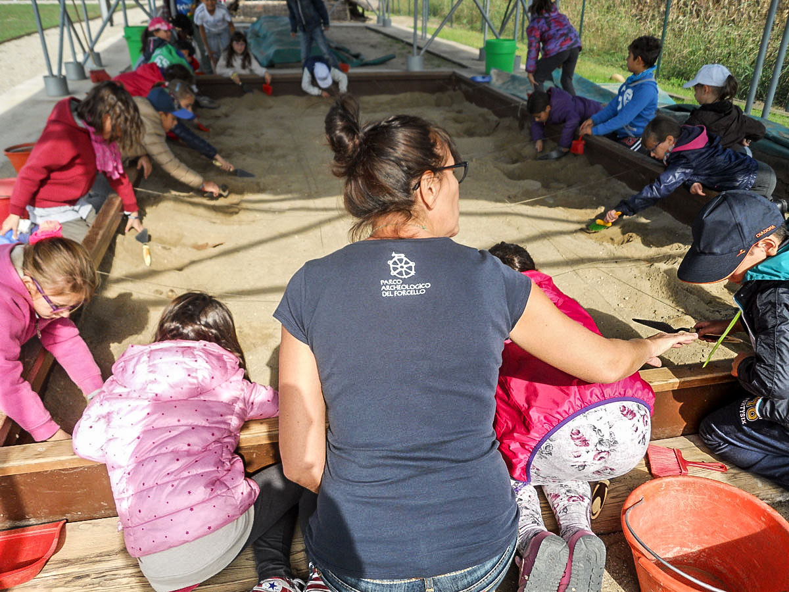
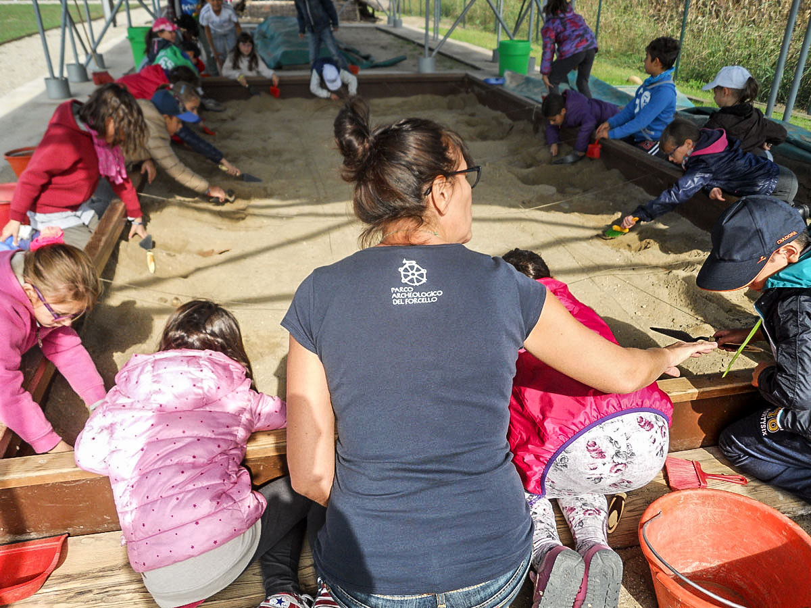

I parchi nazionali italiani offrono un’ampia gamma di opportunità per vivere momenti a
contatto con la natura, integrando aspetti ricreativi, educativi e culturali.
Escursioni e trekking rappresentano spesso la prima scelta: molti itinerari sono mappati e ben
segnalati, con diversi gradi di difficoltà, così da soddisfare sia gli appassionati di lunghe
camminate sui sentieri alpini o appenninici, sia chi cerca percorsi più dolci fra boschi secolari
o tratti costieri panoramici.
Lungo il cammino, non è raro imbattersi in centri visita e punti informativi dove guide
specializzate forniscono dettagli su flora, fauna e geologia dell’area.
Per coloro che desiderano un approccio più strutturato, visite guidate e laboratori didattici
consentono di approfondire tematiche come la conservazione degli ecosistemi, la storia
geologica delle montagne o la tutela di specie in pericolo.
Queste attività sono spesso rivolte a scuole, famiglie o gruppi organizzati, con possibilità di
sperimentare laboratori di educazione ambientale sul campo o workshop pratici (ad esempio,
sul riconoscimento delle tracce animali o sull’orientamento in montagna).
Grazie alla varietà morfologica del territorio, numerosi parchi si prestano a sport all’aria
aperta: in zone montuose si praticano l’arrampicata, il downhill in mountain bike o lo sci di
fondo nelle stagioni fredde, mentre le aree costiere e lacustri favoriscono kayak, canoa,
snorkeling e immersioni.
Molti parchi dispongono di punti panoramici particolarmente indicati per il birdwatching,
dove, con l’ausilio di capanni o torri d’avvistamento, si possono osservare specie migratorie e
rapaci di grande fascino.
Anche la dimensione culturale e gastronomica è fondamentale. Molti parchi ospitano eventi e
manifestazioni dedicati a prodotti tipici (vino, formaggi, miele, olio) e antiche tradizioni.
Infine, per un’immersione completa, alcuni itinerari integrano la visita a siti archeologici o
borghi storici, testimoniando l’equilibrio millenario tra l’uomo e l’ambiente.
In questo modo, chi sceglie di esplorare i parchi nazionali italiani può trovare esperienze su
misura, imparare a conoscere e rispettare la natura, nonché scoprire la ricchezza culturale
dei territori protetti.
•Parco Nazionale del Gran Paradiso: Sentieri alpini che attraversano ghiacciai e pascoli, ideali per il trekking d’alta quota.
•Parco Nazionale d’Abruzzo, Lazio e Molise: Faggete vetuste, percorsi adatti a tutti i livelli e possibilità di avvistare fauna selvatica.
•Parco Nazionale del Pollino: Itinerari tra vette selvagge, gole e i caratteristici pini loricati.
•Parco Nazionale delle Dolomiti Bellunesi: Ampia rete di sentieri con panorami spettacolari e rifugi alpini.
•Parco Nazionale della Sila: Boschi di faggio e pino laricio, percorsi immersi nella natura dell’altopiano.
•Parco Nazionale delle Foreste Casentinesi, Monte Falterona e Campigna: Foreste secolari, eremi e abbazie raggiungibili a piedi.
 

•Parco Nazionale d’Abruzzo, Lazio e Molise: Centri visita per conoscere l’orso bruno marsicano e progetti di educazione ambientale.
•Parco Nazionale del Gran Paradiso: Guide che illustrano la storia della protezione dello stambecco e l’ecologia alpina.
•Parco Nazionale delle Foreste Casentinesi: Percorsi guidati per scoprire la biodiversità forestale e l’importanza delle faggete vetuste.
•Parco Nazionale della Sila: Laboratori su flora, fauna e antiche tradizioni agro-pastorali (es. transumanza).
•Parco Nazionale del Vesuvio: Visite geologiche alla scoperta del vulcano e della sua storia eruttiva.
(In quasi tutti i parchi è possibile prenotare visite guidate e percorsi didattici su richiesta.)
Arrampicata:
·Parco Nazionale del Pollino: Pareti rocciose ideali per climber esperti.
·Parco Nazionale delle Dolomiti Bellunesi: Falesie di diversa difficoltà e vie ferrate.
Mountain Bike:
·Parco Nazionale della Sila: Percorsi sterrati tra boschi e altopiani.
·Parco Nazionale d’Abruzzo, Lazio e Molise: Sentieri misti fra faggete e borghi.
Canoa / Kayak / Snorkeling:
·Parco Nazionale delle Cinque Terre: Tratti costieri accessibili via mare, piccole cale.
·Parco Nazionale dell’Arcipelago Toscano: Escursioni in kayak tra calette e fondali
ricchi di vita marina.
·Parco Nazionale dell’Arcipelago di La Maddalena: Acque cristalline ideali per
immersioni e snorkeling.
Sci e Sport Invernali:
·Parco Nazionale della Sila: Sci di fondo e ciaspolate in altopiano.
·Parco Nazionale d’Abruzzo, Lazio e Molise: Possibilità di sci di fondo e ciaspolate
in aree boschive.
•Parco Nazionale d’Abruzzo, Lazio e Molise: Rapaci come l’aquila reale, e possibilità di avvistare camosci (non volatili, ma di notevole interesse).
•Parco Nazionale delle Foreste Casentinesi: Varie specie di uccelli che nidificano in foresta, tra cui picchi e rapaci diurni.
•Parco Nazionale dell’Arcipelago Toscano: Uccelli marini e migratori, compresi gabbiano corso e falco pellegrino sulle falesie.
•Parco Nazionale del Cilento, Vallo di Diano e Alburni: Zone umide interne e tratte costiere frequentate da uccelli migratori.
•Parco Nazionale delle Cinque Terre: I caratteristici borghi marinari (Riomaggiore, Manarola, Corniglia, Vernazza, Monterosso).
•Parco Nazionale del Vesuvio: Vicinanza a siti archeologici come Pompei ed Ercolano (extraparco, ma strettamente correlati).
•Parco Nazionale dell’Arcipelago Toscano: Isola d’Elba con le residenze napoleoniche, resti romani a Giannutri.
•Parco Nazionale del Cilento, Vallo di Diano e Alburni: Vicinanza ai siti di Paestum e Velia, ricchi di testimonianze della Magna Grecia
•Parco dell’Etna: Paesini etnei con centri storici in pietra lavica, chiese e musei dedicati all’attività vulcanica.